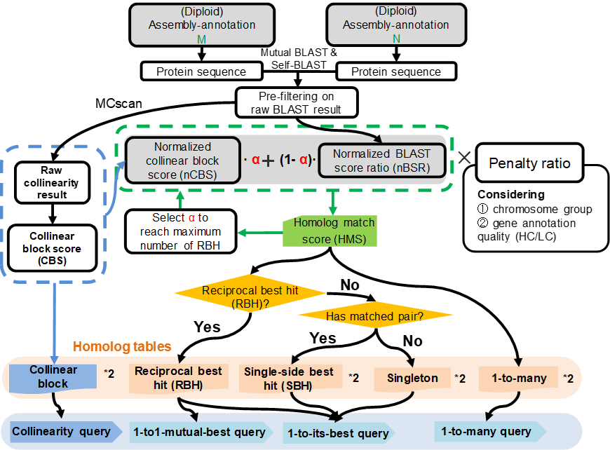

1 What is GeneTribe

Command
genetribe -h
# Program: GeneTribe (a tool for homology inference)
# Version: 1.0.0
#
# Usage: genetribe <command> [options]
#
# Subcommands include:
#
# [ pipeline ]
# core Core workflow of GeneTribe
# corenog Workflow not grouping chromosomes
# sameassembly Homology inference for the same assembly
#
# [ tool ]
# RBH Obtain Reciprocal Best Hits (RBH)
# CBS Calculate Collinear Block Score (CBS)
# longestcds Extract longest protein sequence from protein fasta
#
# Author: Chen,Yongming
# Email: chen_yongming@126.com
# Homepage: https://chenym1.github.io/genetribe/